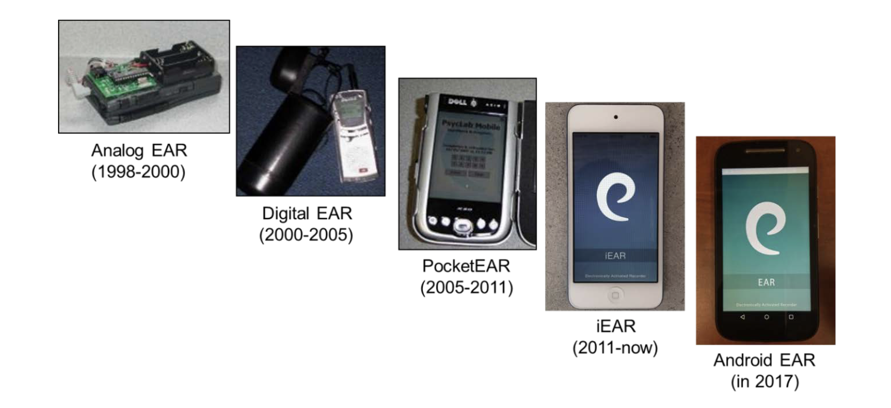
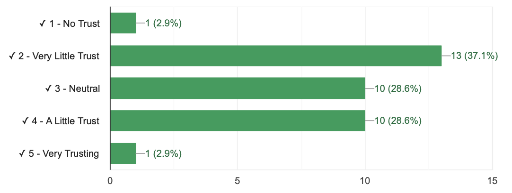

# https://docs.google.com/spreadsheets/d/1Vw8ezL6BeXRronRFLAZUEpUZoETND_hra80u-RQFCGM/edit?usp=sharingCheck-In Here : tinyurl.com/EARstudy
REMINDER : Okay to not understand everything!
what’s the point / takeaway from the article?
how do the researchers describe the reliability and validity of the measure?

Part 1 : Observing Words (Reading Research)
Check-In Review : Reading a Research Article
Check-In Review : Reliability and Validity in Our Measures
Check-In Review : A Wild Graph Appeared
Table
Histogram
Reading Review : Observational Methods
Which method of assessment do you think would be the best way to answer this question?
Problems with self-reports?
Self-reports are criticized, but foundational to psychology, definitely have value, and all methods of meaurement have bias anyway (fMRI data). Will learn more next week.
| Trust in Self-Reports | Trust in Observations | Trust in fMRI |
|---|---|---|
|  |  |
 |
Part 2 : Operationalization is an Eight Syllable Word
Say this word outloud.
What comes to mind when you see this word?
DEFINITION : Operationalization
- A definition.
A “Cognitive Examination” in Popular Press

“Cognitive Examination” Operationalized

Deep Breath. No Talking.
ACTIVITY : Count the Interruptions.
Count the Interruptions : tinyurl.com/researchinterruptions
- Count the number of interruptions in the video (which professor will play soon).
- Submit your answer, then wait for the letter of the day.
BUDDY DISCUSSION
How was watching the video?
How many INTERRUPTIONS did you count?
How did you OPERATIONALIZE an INTERRUPTION? What are some ways we could strengthen this OPERATIONALIZATION?
Can you say OPERATIONALIZATION three times fast?
CLASS DISCUSSION :
Clap if you and your buddy got the exact same number.
This is a problem of…
- inter-rater reliability
- test-retest reliability
- convergent validity
- discriminant validity
- face validity
What PREDICTIONS can we make about counting interruptions a second time?
DISCUSS : the three rules of people watching
the three rules : which one is the most important?
DISCUSS : the three rules of people watching
Review of existing
Defining a SPAFF for an interruption.
SPEAKING OF OBSERVATIONS…
- Y’all observe me; department wants your feedback.
- Why does college not trust professor’s self-reports of their own teaching (we are great.)
Readings / Links
EAR Study
Original Article (Science, 2007) + Supplementary Material
Pre-Reg Article + Pre-Reg : Analysis Plan
GOTTMAN :
Discussion Questions
ON THE VISION BOARD : Look over the SPAFF DRAFT that professor got started for the variable of “Interruption.” Contribute at least ONE idea to the list (next to your name) from one of the following categories in the reading.
What is the FUNCTION of the variable you observe?
What are the INDICATORS of the variable?
What are the PHYSICAL CUES of the variable?
What are some COUNTER-INDICATORS for this variable that the person might define to avoid error in your observations?
REPLY TO ANOTHER STUDENT. Look over their draft of the SPAFF rating scale. Help them revise at least one part of their behavioral coding guidelines to improve the validity of the observation.
Bye
- Readings : On Surveys and Likert Scales
- Discussion Questions :